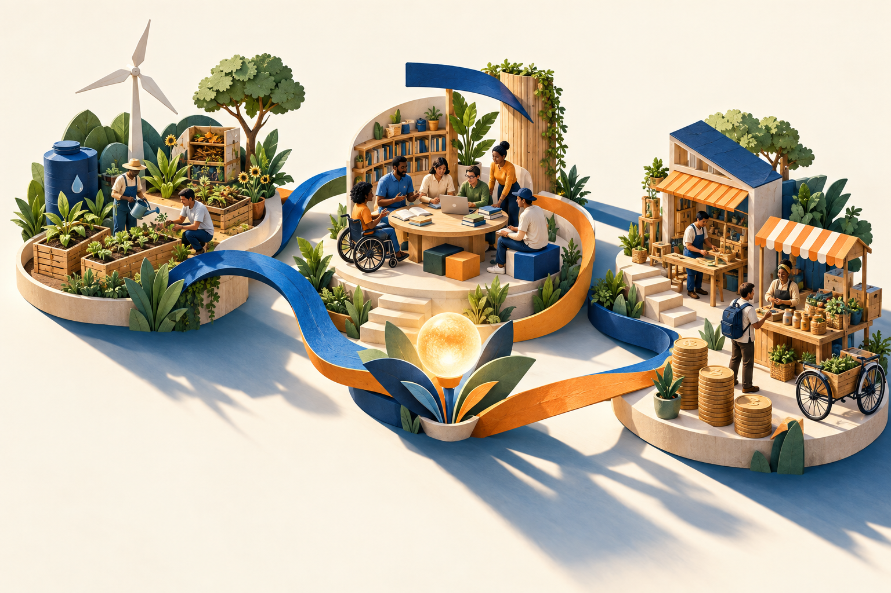

Ideias que se encontram.Aprendizagem que faz sentido.Ilustração criada com IA para o projeto. Os registros reais dos encontros estão nas evidências de cada aula.
Como cheguei até aqui?
Agosto — Setembro / 2026
Meu percurso
01—06 / Um percurso em construção
Criar experiências. Construir autonomia.
Sou docente do Senac Araraquara, nas áreas de Tecnologia e Aprendizagem. Minha prática já se apoia na mediação, no protagonismo do estudante e na criação de desafios que favoreçam a autonomia.
Neste portfólio, reúno o que produzi, ouvi, compartilhei e repensei ao longo do curso O Educador Empreendedor. Cada evidência ajuda a explicar uma escolha e a conexão entre meu percurso e o projeto final.
As quatro primeiras aulas foram realizadas on-line. As Aulas 5 e 6 ocorrerão presencialmente em 22 de setembro de 2026.
Uma fala que resume minha intenção
“Se permitir experimentar e criar mais para poder permitir o mesmo para nosso estudante.”
O professor como criador de experiências de aprendizagem.
A experiência e minha participação
A primeira aula abordou as transformações do mundo do trabalho e seus impactos na educação profissional. A discussão relacionou automação, digitalização e mudanças nas ocupações à necessidade de preparar pessoas para diferentes formas de atuação. A distinção entre empregabilidade e trabalhabilidade ampliou esse olhar: além da inserção em um emprego, entraram em pauta as possibilidades de mobilizar conhecimentos e construir caminhos de trabalho em contextos diversos.
Também discutimos como as profissões carregam representações sociais e como o reconhecimento de uma atividade nem sempre acompanha seu valor econômico. Nesse contexto, a educação empreendedora foi apresentada como parte da formação para compreender mudanças, identificar oportunidades e agir sobre a realidade. Esse panorama deu sentido à reflexão sobre o papel do professor e sobre os futuros possíveis da docência.
A atividade nos convidou a olhar para a docência no passado, no presente e no futuro. Ao grupo, propus que o professor deixasse de ser visto principalmente como quem proporciona acesso ao conhecimento e passasse a ser compreendido como criador de experiências sobre esse conhecimento. O que me marcou foi perceber que meus colegas ainda não haviam considerado essa possibilidade.
Passado: fonte de informaçãoPresente: mediação e curadoriaFuturo imaginado: experiências e vínculo
Vejo · Penso · Pergunto-me
REFLEXÃO / 01
Vejo
Observei uma mudança no lugar ocupado pelo professor. No passado descrito pelo grupo, predominavam aulas expositivas, livros, lousa e materiais físicos, com o docente entre as principais fontes de informação. No presente, a mediação convive com plataformas, recursos digitais e inteligência artificial. Essa discussão se conecta com minha atuação: já procuro colocar o estudante como protagonista, mediando a aprendizagem e construindo sua autonomia.
REFLEXÃO / 02
Penso
Minha hipótese é que, em um futuro fortemente marcado pela IA, a docência possa se tornar mais personalizada, de nicho e cara. Entendo esse cenário como provável, e não como uma situação que necessariamente desejo. O professor preservaria o vínculo humano e a criação pedagógica. A contribuição de outro grupo, também marcada pela expansão tecnológica, reforçou minha hipótese; não provocou uma mudança de posição.
REFLEXÃO / 03
Pergunto-me
Como manter o acesso ao acompanhamento humano se a personalização se tornar um serviço caro? Como criar experiências significativas em um ambiente de informação abundante? E como garantir que os recursos digitais contribuam para a autonomia, em vez de substituir a participação do estudante? São inquietações que permanecem abertas ao olhar para esse cenário.
O tempo de discussão não permitiu aprofundar todas as dimensões da análise STEEP. A produção registra o que foi possível construir no encontro; a hipótese de futuro permanece uma interpretação, não uma previsão comprovada.
Registro do encontro on-line com as orientações para o portfólio. Escolhi este momento porque apresenta o sentido do trabalho: contar como cheguei até aqui, explicando as evidências e refletindo sobre a aprendizagem.
Mensagens de João Alves dos Santos e Giliade Santos Macedo. Rever colegas com quem já compartilhei outras experiências formativas reforçou o vínculo e a disposição para aprender junto.
Registro da contribuição de outro grupo. A presença de tecnologias em seu cenário reforçou minha hipótese sobre a transformação da docência e a importância do vínculo humano.
Materiais e produções
Arquivos completos preservados
PDF · 54 páginas
Material do encontro
Educação Empreendedora e o Mundo do Trabalho. Referência para a discussão sobre a docência e os futuros possíveis.
REGISTRO DIA 25/08
PLANEJAR — MEDIAR — AVALIAR
PROJETO:
• Alinhamento institucional e conceitual.
• Integração de competências empreendedoras.
• Coerência pedagógica e metodologia ativa.
• Geração de valor individual e coletivo.
PORTFÓLIO DE APRENDIZAGENS:
• Diversificar as evidências.
• Não junte coisas, explique.
• Reflita criticamente sobre o processo.
• Cuide da clareza e da coerência.
O portfólio deve responder à pergunta: “Como cheguei até aqui?”
MINHA FALA: Se permitir experimentar e criar mais para poder permitir o mesmo para nosso estudante.
Reencontro com Giliade, que está em São Carlos, mas já esteve aqui em Araraquara. E também com João Alves, da Tito, que também é multiplicador de IA.
Conceito de representação social — Serge Moscovici: conjunto de ideias, crenças, imagens e valores que uma sociedade compartilha sobre determinado assunto.
Valor social e valor econômico nem sempre caminham juntos.
Trabalhar o empreendedorismo e segurança do trabalho incluindo a cultura do estudante.
Transcrição das minhas anotações.
02
Aula 02 / Encontro realizado / On-line
Empreendedorismo e Educação Empreendedora
27 de agosto de 2026 · 13h30 às 17h30
Transformar o erro em oportunidade de investigar, decidir e aprender.
A experiência e minha participação
A segunda aula aprofundou o significado de empreendedorismo e sua relação com a proposta educacional do Senac. O tema foi trabalhado como um modo de pensar e agir sobre oportunidades, articulando criatividade, inovação e geração de valor individual e coletivo. Essa compreensão ampliou a discussão para iniciativas que transformam situações do cotidiano, melhoram práticas profissionais e contribuem para a qualidade de vida, além da criação de negócios.
A relação com a missão e os valores institucionais trouxe para o debate a inclusão, a sustentabilidade e a transformação social. Na dimensão pedagógica, discutimos como desenvolver competências empreendedoras em situações nas quais o estudante participa das decisões e mobiliza conhecimentos para enfrentar problemas. A questão central passou a ser como planejar experiências que favoreçam esse protagonismo, conectando o conteúdo técnico à investigação e à construção de soluções.
Em grupo, repensamos uma situação envolvendo a produção de 1.200 refeições diárias. O desafio era reduzir perdas, melhorar a padronização e fortalecer a segurança sem comprometer a qualidade e a distribuição. Minha contribuição foi reunir erros observados entre os estudantes e transformá-los em um caso de um local fictício, no qual eles pudessem analisar o problema e construir correções.
Reconhecer erros e necessidadesAnalisar alternativasPropor e justificar melhorias
Conecto · Amplio · Desafia
REFLEXÃO / 01
Conecto
Essa proposta se aproxima do que já faço. Nas aulas de tecnologia, costumo apresentar um código pronto, com erros, para que os estudantes depurem, proponham uma solução e expliquem suas escolhas. Na Aprendizagem, trago situações da vida real, peço a construção de um mundo ideal e depois introduzo conflitos. O confronto entre as versões ajuda a perceber quais escolhas conseguem responder melhor aos problemas.
REFLEXÃO / 02
Amplio
Ganhei mais clareza de que empreender não significa somente abrir um negócio. A atitude empreendedora também aparece quando alguém identifica uma necessidade, mobiliza conhecimentos, toma decisões e propõe uma melhoria. No caso estudado, o valor pode estar em reduzir desperdícios, melhorar a organização e tornar o trabalho mais seguro. O conhecimento técnico passa a apoiar escolhas que precisam ser justificadas.
REFLEXÃO / 03
Desafia
Discutimos como oferecer liberdade sem que ela seja confundida com ausência de responsabilidade. Esse equilíbrio exige objetivos claros, acompanhamento e espaço para a tentativa. Reconheço que, em algumas situações, dar a solução se torna necessário, mas procuro manter essa intervenção como último recurso. O desafio é sustentar a autonomia sem abandonar o estudante diante da dificuldade.
A resposta do grupo propõe comparar desperdício, rendimento, segurança e eficiência antes e depois de uma melhoria. Esses são critérios planejados para a situação de aprendizagem.
Meme compartilhado por Miriam após a brincadeira de Jair: abraçar e orar pelo colega que ainda associa empreender somente a abrir um negócio. O humor tornou marcante a ampliação desse conceito.
Registro do compartilhamento da síntese de Paulo Henrique Benedeti. Sua criatividade e seu talento ofereceram outra forma de acompanhar e organizar os conteúdos da aula.
Resposta construída em grupo. Minha contribuição foi transformar erros observados em um local fictício para que os estudantes analisassem e propusessem correções.
REGISTRO DIA 27/08
Projeto: proposta de aplicação de uma educação empreendedora.
Fornecer os recursos necessários para desenvolver o projeto para empreender.
Promover a formação de jovens, mulheres e pessoas em situação de vulnerabilidade, favorecendo oportunidades no mercado de trabalho ou geração de renda.
@umaohanaporai
Pergunta norteadora: Como reduzir as perdas, aumentar a padronização e fortalecer a segurança sanitária e ocupacional na produção das 1.200 refeições diárias, propondo melhorias sem comprometer o cardápio, a qualidade das preparações e o horário de distribuição?
• Identificar oportunidades de melhoria.
• Tomar decisões, escolhendo procedimentos, utensílios e formas de organização.
• Mobilizar o conteúdo técnico da UC.
• Criar uma solução viável, como um novo fluxo de trabalho ou padronização de processos.
• Demonstrar o valor gerado.
O registro @umaohanaporai se refere ao exemplo de uma família que trabalha remotamente e aproveita essa condição para viajar sem manter um endereço fixo. As demais anotações registram conceitos e a construção da atividade do encontro.
03
Aula 03 / Encontro realizado / On-line
Empreendedorismo como Modo de Pensar e Agir
1º de setembro de 2026 · 13h30 às 17h30
A conquista precisa parecer possível — e o percurso também merece reconhecimento.
A experiência e minha participação
A terceira aula concentrou-se na atitude empreendedora e nas motivações que levam uma pessoa a agir. A discussão diferenciou a reação a uma demanda da iniciativa orientada por uma escolha e um propósito. Sonhos, necessidades, valores e expectativas foram relacionados às decisões, mostrando que a ação empreendedora envolve tanto a maneira de interpretar uma situação quanto a disposição para intervir nela.
As teorias da motivação e o ciclo motivacional ajudaram a discutir o que sustenta o envolvimento e o que acontece diante de barreiras e frustrações. Na educação, esse olhar trouxe questões sobre acolhimento, segurança para experimentar, pertencimento e reconhecimento dos avanços. Também refletimos sobre a responsabilidade da mediação docente: em que medida as experiências propostas convidam o estudante a tomar iniciativa ou apenas a responder ao que foi solicitado?
A partir dos relatos sobre o abandono do Empreenda, nosso grupo discutiu o ciclo motivacional e elaborou duas ações: dividir o percurso em etapas menores e ampliar as possibilidades de participação e reconhecimento. Minha contribuição foi a regionalização de uma das etapas, aproximando a possibilidade de conquista de estudantes de cidades do interior.
Desafio percebido como distanteEtapas e conquistas próximasPertencimento e continuidade
Penso · Dialogo · Consolido
REFLEXÃO / 01
Penso
Considero importante reconhecer as diferenças de contexto entre estudantes de uma pequena cidade e da capital. Minha proposta de regionalização procura ampliar as oportunidades de participação e de reconhecimento, sem atribuir menor capacidade a quem está no interior. Ao analisar a desmotivação, também percebi a importância de metas intermediárias que permitam ao estudante enxergar seu próprio avanço.
REFLEXÃO / 02
Dialogo
Não houve discordância no grupo. Todos eram de unidades do interior de São Paulo, e fiquei feliz em reconhecer que uma dificuldade que vivencio em Araraquara também aparecia na experiência dos colegas. Essa troca fortaleceu a percepção de que o problema merecia atenção. O reencontro com Rosana, de São Carlos, e as contribuições compartilhadas durante a aula deram um sentido concreto à aprendizagem coletiva.
REFLEXÃO / 03
Consolido
Já acompanhei estudantes que perderam o interesse ou ficaram desmotivados. Nessas ocasiões, procurei relacionar a persistência às escolhas que fariam ao longo da vida. Levo desta discussão a valorização do percurso, da experiência construída e do reconhecimento local, inclusive dos destaques da unidade, ainda que esse reconhecimento não faça parte de uma premiação institucional. Aprender e avançar também precisam ser percebidos como conquista.
Na minha intervenção com estudantes, utilizei uma fala enfática sobre as consequências de desistir diante de cada dificuldade.
Imagem da Carta da Paz Social apresentada no encontro. Escolhida como registro da aproximação com as origens e os compromissos sociais discutidos na formação.
Mensagem de Rosana Maria Menzani sobre a reflexão do grupo. Reencontrá-la, da unidade São Carlos, retomou vínculos de outros Educores e marcou o trabalho compartilhado nesta aula.
Produção coletiva sobre motivação e permanência. Minha contribuição foi propor etapas regionais que aproximassem a possibilidade de conquista dos estudantes.
REGISTRO DIA 01/09
Na primeira reflexão em grupo sobre reagir ou agir, pensamos que nossos estudantes possuem diversos comportamentos dependendo do período, das turmas e das responsabilidades. Mas, antes, precisamos pensar o quanto provocamos nosso estudante para somente reagir ou para agir.
O QUE MOTIVA A AÇÃO EMPREENDEDORA?
Na segunda reflexão em grupo, utilizamos uma das formas de mapeamento de ações e analisamos algumas frases de relatos dos estudantes sobre por que abandonam o Empreenda. Nesse processo, tínhamos que criar duas ações para minimizar o abandono.
Registro contemporâneo das duas discussões em grupo. O primeiro trecho desloca parte da reflexão para a própria mediação docente: que experiências oferecemos para provocar a iniciativa dos estudantes?
04
Aula 04 / Encontro realizado / On-line
Criatividade e Inovação na Educação Empreendedora
3 de setembro de 2026 · 13h30 às 17h30
Experimentar além da própria área, sem perder a intenção pedagógica.
A experiência e minha participação
A quarta aula abordou a criatividade e a inovação como dimensões da educação empreendedora. A relação entre produzir ideias e colocá-las em prática ajudou a discutir como uma proposta pode responder a uma necessidade e gerar valor. O encontro também destacou as condições que favorecem a criação, como curiosidade, autonomia, repertório, motivação e abertura para experimentar diferentes possibilidades.
A práxis e a pedagogia da pergunta trouxeram a relação entre reflexão e ação para o centro do debate. Perguntar, investigar, testar e rever escolhas apareceram como caminhos para uma aprendizagem participativa. A ficção científica, a cultura do fazer e as estratégias de experimentação compuseram o repertório de possibilidades pedagógicas. A partir dessas discussões, o planejamento da aula passou a ser pensado como uma experiência com intenção, espaço para criação e análise dos resultados.
Com Cristiane e Giliade, planejei uma situação de aprendizagem baseada no plano de curso do Técnico em Confeitaria. A proposta envolvia uma sobremesa aerada com ingrediente regional, análise dos resultados e apresentação do produto. Minha contribuição foi a rotação por estações. Trabalhar fora da minha área parece complexo, mas encontramos relações pedagógicas que podem ser aplicadas em diferentes contextos.
Planejar a preparaçãoExperimentar e circularAnalisar e defender escolhas
Imagine se…
REFLEXÃO / 01
Imagine se…
Se a proposta fosse implementada, os estudantes poderiam planejar uma preparação, escolher ingredientes e utensílios, experimentar e comparar resultados. A rotação por estações permitiria a apresentação das produções e a avaliação sensorial. A circulação entre experiências favoreceria o contato com soluções diferentes e a explicação das decisões tomadas por cada equipe.
REFLEXÃO / 02
Transformações possíveis
O ingrediente regional pode ampliar o pertencimento ao território e a valorização de seus recursos. A experimentação oferece uma oportunidade de incentivar a visão crítica: compreender por que uma preparação alcançou determinado resultado e o que pode ser ajustado. A criação ganha sentido quando o estudante testa, analisa alternativas e defende uma solução que gere valor.
REFLEXÃO / 03
Barreiras a superar
A duração das etapas é uma incógnita por não atuar na área de Confeitaria. Para aplicar o planejamento, seria importante ajustar os tempos com quem domina seus processos técnicos.
O grupo relacionou rotação por estações aos verbos “Entender” e “Analisar”, e experimentação a “Avaliar” e “Analisar”, conforme as situações propostas.
Curso, UC e indicador utilizados no planejamento
Curso: Técnico em Confeitaria. UC: Preparar produções básicas de confeitaria na panificação. Indicador: Produz massas e cremes da confeitaria, considerando fichas operacionais, técnicas, texturas e aplicabilidades.
O chat contextualiza a conversa sobre mestrado no início da aula. Minha participação foi oral: compartilhei o quanto o processo, já próximo da conclusão, contribuiu para meu aprendizado pedagógico e a dedicação de tempo que exige.
Material sobre a Taxonomia de Bloom revisada enviado como evidência do encontro. Sua escolha registra a importância que atribuo aos verbos no desenvolvimento e na intencionalidade das situações de aprendizagem.
Materiais e produções
Arquivos completos preservados
PDF · 57 páginas
Material do encontro
Referência para pensar criatividade, inovação e intencionalidade nas situações de aprendizagem.
Planejamento produzido por Sandro, Cristiane e Giliade. Inclui rotação por estações e uso de ingrediente regional; a atividade não foi aplicada neste curso.
REGISTRO DIA 03/09
PRÁXIS
PEDAGOGIA DA PERGUNTA — PAULO FREIRE
Essas anotações sintéticas registram práticas que desejo adotar mais na vida profissional e pessoal. No início do encontro, também compartilhei oralmente a contribuição do mestrado para meu aprendizado pedagógico e o tempo de dedicação necessário.
05
Aula 05 / Geração de Valor Individual e Coletivo (Legado)
Em construção.
Esta etapa será realizada presencialmente em 22 de setembro de 2026, no encontro das Aulas 5 e 6, das 9h às 18h.
Encontro ainda não realizado nesta versão
Aula 06 / Projeto final / Apresentação em 22.09.2026Proposta desenvolvida · realização a viabilizar
Tecnologia e IA para gerar valor.
Ciclo de oficinas de empreendedorismo, inovação e sustentabilidade
Pequenas experiências de aprendizagem que aproximam a inteligência artificial dos problemas reais das pessoas.
Uma proposta para o Senac Araraquara, com mediação de Sandro Polizel Laurentino. Encontro presencial das Aulas 5 e 6: 22 de setembro de 2026, das 9h às 18h.
Ilustração criada com IA para representar a proposta.
Gratuitasacesso às oficinas
≈ 25participantes por encontro
4 horasduração prevista por oficina
3 encontrosciclo inicial em três meses
01 / O ponto de partida
Há interesse em IA. Falta aproximar o uso da vida real.
Na minha prática, percebo interesse pela inteligência artificial, mas também dúvidas sobre como utilizá-la para organizar ideias, estudar, comunicar uma iniciativa ou melhorar uma atividade cotidiana. Muitos usos permanecem em perguntas e respostas isoladas. Quero ampliar esse repertório por meio de experiências acessíveis, contextualizadas e acompanhadas.
O desafio
Criar oportunidades de aprendizagem que atravessem as áreas da unidade e ajudem estudantes e colaboradores a transformar uma necessidade em uma possibilidade de ação. O projeto começa na unidade e pode, conforme a viabilidade, aproximar também a comunidade externa.
Objetivo geral
Promover oficinas gratuitas de tecnologia e inteligência artificial que desenvolvam competências empreendedoras, autonomia e análise crítica, apoiando a construção de soluções para necessidades reais e a geração de valor individual e coletivo, com atenção às dimensões ambiental, social e econômica da sustentabilidade.
Status: projeto elaborado como entrega final do curso. Após a apresentação, será levado à unidade para análise e tentativa de realização.
02 / Fundamentos da proposta
Empreender também é melhorar o que já faz parte da nossa vida.
A proposta compreende o empreendedorismo como um modo de pensar e agir: perceber necessidades e oportunidades, mobilizar conhecimentos, tomar iniciativa e construir soluções que gerem valor. Essa compreensão se apoia nos materiais do curso e se articula à Marca Formativa Criatividade e Atitude Empreendedora.
01
Mediação e autoria
A Aula 1 fortaleceu minha compreensão do professor como criador de experiências. Nas oficinas, acompanho a investigação e as escolhas dos participantes.
02
Empreender no cotidiano
A Aula 2 ampliou a clareza sobre gerar valor além de abrir negócios. A proposta inclui necessidades pessoais, de estudo e de trabalho.
03
Desafios possíveis
A Aula 3 trouxe a importância de reconhecer avanços e aproximar as oportunidades. Os desafios serão delimitados e ligados ao contexto dos participantes.
04
Experimentação com intenção
A Aula 4 contribuiu com criatividade, experimentação e planejamento. Os verbos de Bloom articulam objetivo, atividade e avaliação no projeto.
Coelho e Carvalho (2026) destacam a qualificação profissional e o uso responsável da IA na adoção organizacional. Essa discussão reforça a justificativa das oficinas. Consultar a referência ↗
03 / A experiência piloto
Desmistificando a IA.
O encontro combinará diálogo, demonstração e experimentação. Cada participante ou pequeno grupo escolherá uma necessidade e registrará seu caminho até uma primeira proposta de aplicação.
Cronograma do piloto · sequência das atividades
Da pergunta inicial à próxima ação.
01
Acolher e escutar
Levantar experiências com IA e necessidades que os participantes gostariam de resolver.
02
Compreender a IA
Explorar possibilidades, limites e a importância de conferir respostas e reconhecer incertezas.
03
Construir solicitações
Experimentar o CAFE: Contexto, Atuação, Foco e Especificação, a partir de uma necessidade.
04
Acompanhar uma demonstração
Observar a seleção de fontes, a definição de critérios e a conferência de um resultado.
05
Intervalo
Pausa entre as atividades e espaço para trocas informais.
06
Experimentar em grupo
Formular um pedido, comparar respostas e revisar a produção para uma necessidade real.
07
Compartilhar as escolhas
Apresentar a produção e explicar dificuldades, critérios e melhorias realizadas.
08
Definir o próximo passo
Registrar a aprendizagem e indicar onde ela poderá ser aplicada no cotidiano.
Possibilidades de desafio
Organizar um plano de estudos a partir de materiais selecionados.
Elaborar uma primeira comunicação para uma iniciativa local, sem inventar informações.
Estruturar uma pequena ideia de projeto, explicitando objetivos, recursos e dúvidas.
Organizar categorias de gastos com dados fictícios, preservando informações pessoais.
São exemplos para escolha e adaptação conforme o público, não temas definitivos de todas as oficinas.
O que fica ao final
Um registro com a necessidade escolhida, a solicitação construída, as fontes ou informações utilizadas, o resultado inicial, as revisões e uma possibilidade de aplicação.
O foco da avaliação será a relação entre necessidade, escolhas e justificativas. Produzir algo visualmente atraente, por si só, não demonstra que a solução seja adequada.
04 / Um método que pode ser experimentado
Contexto transforma o pedido.
O CAFE será um apoio para tornar a intenção mais clara. Além de formular pedidos, o participante precisará conferir o resultado, explicitar limites e decidir o que pode aproveitar.
CContexto
Qual é a situação, para quem e com quais recursos?
AAtuação
Que tipo de apoio se espera da ferramenta?
FFoco
Qual tarefa precisa ser realizada?
EEspecificação
Em qual formato, com quais critérios e limites?
“Faça um plano para eu estudar.”
O pedido não informa objetivo, disponibilidade, materiais ou dificuldades. Ainda faltam elementos para avaliar se a resposta será útil.
Contexto: quero estudar um tema que está nestes materiais e disponho de três momentos na semana. Atuação: apoie a organização do meu estudo. Foco: proponha um plano inicial com leitura, prática e revisão. Especificação: apresente uma tabela, use os materiais fornecidos, indique lacunas e pergunte o que faltar antes de completar informações.
Exemplo didático do projeto. Uma solicitação mais clara também precisa de análise humana: a instrução não garante uma resposta correta.
Fontes
Selecionar materiais pertinentes à tarefa.
Papel e limites
Explicitar o apoio esperado e o que não pode ser inventado ou compartilhado.
Conferência
Comparar a resposta com as informações e os critérios disponíveis.
Decisão humana
Utilizar, corrigir ou descartar, justificando a escolha.
05 / Taxonomia de Bloom revisada
Um verbo. Uma intenção. Uma evidência de aprendizagem.
No projeto, Bloom ajuda a tornar explícito o que o participante deverá desenvolver e demonstrar. Selecione um processo cognitivo para acompanhar sua relação com o objetivo, a atividade e a evidência esperada.
01
Identificar possibilidades e limites.
Retomar noções básicas apresentadas no encontro e reconhecer exemplos de uso da IA.
Evidência: registro de exemplos e cuidados básicos. O critério é a identificação coerente com o que foi discutido.
02
Explicar por que conferir.
Discutir exemplos e explicar, com as próprias palavras, por que uma resposta precisa de contexto e de verificação.
Evidência: explicação dos cuidados necessários. O critério é relacionar o cuidado ao exemplo, em vez de apenas repetir uma regra.
03
Utilizar o CAFE.
Formular uma solicitação para uma necessidade real, indicando Contexto, Atuação, Foco e Especificação.
Evidência: pedido contextualizado. O critério é a coerência entre a necessidade e os elementos da solicitação.
04
Comparar e reconhecer lacunas.
Examinar respostas ou versões e identificar diferenças, informações ausentes e aspectos que não atendem ao objetivo.
Evidência: registro das lacunas e dos ajustes. O critério é apoiar a comparação nas fontes e na necessidade escolhida.
05
Justificar uma decisão.
Decidir o que utilizar, corrigir ou descartar considerando qualidade, privacidade, viabilidade e adequação ao contexto.
Evidência: justificativa das escolhas. O critério é apresentar razões e limites para a decisão.
06
Elaborar uma primeira solução.
Integrar as escolhas e as revisões em uma proposta ou material inicial, adaptado à situação de uso.
Evidência: produção revisada e próximo passo de aplicação. O critério é sua relação com a necessidade e as condições reais do participante.
Os processos se conectam e podem ser retomados. Esta representação organiza a intenção do planejamento; não determina uma ordem rígida nem presume que todos alcançarão a mesma complexidade no mesmo tempo.
06 / Competências empreendedoras em ação
O que cada atividade desenvolve.
As competências empreendedoras serão trabalhadas nas escolhas e nas ações de cada participante. Para mostrar essa relação, o exemplo abaixo acompanha uma pessoa que deseja usar a IA para organizar melhor seus estudos. O mesmo percurso poderá ser adaptado às outras necessidades escolhidas na oficina.
Etapa da oficina
Ação do participante — exemplo dos estudos
Competência desenvolvida e sua relação com a ação
Acolher e escutar
Identifica que tem dificuldade para organizar os estudos e escolhe essa necessidade como desafio.
Identificação de oportunidades e iniciativa: reconhece uma possibilidade de melhoria no cotidiano e decide começar a agir.
Construir solicitações
Seleciona os materiais, informa o que precisa aprender e sua disponibilidade, organizando o pedido com o CAFE.
Busca de informações: reúne os elementos necessários para construir uma resposta adequada à sua realidade.
Acompanhar uma demonstração
Analisa como conferir se uma sugestão corresponde aos materiais e identifica quais informações pessoais não precisa compartilhar.
Avaliação de riscos: considera possíveis erros e cuidados com os dados antes de utilizar a ferramenta e suas respostas.
Experimentar em grupo — planejar
Utiliza a IA para elaborar uma primeira proposta de estudos, com objetivos, momentos de leitura, prática e revisão.
Planejamento e estabelecimento de metas: transforma uma necessidade em passos possíveis, considerando o tempo e os recursos disponíveis.
Experimentar em grupo — revisar
Percebe que a proposta exige mais tempo do que possui, ajusta o pedido e compara a nova versão com a anterior.
Qualidade e persistência: reconhece uma dificuldade, procura melhorar a solução e verifica se o ajuste atende ao objetivo.
Compartilhar as escolhas
Apresenta o plano, explica quais sugestões aproveitou ou descartou e considera as contribuições dos colegas.
Autonomia, comunicação e colaboração: assume suas decisões, apresenta razões para elas e aprende com outras perspectivas.
Definir o próximo passo
Escolhe uma parte do plano para colocar em prática e define quando observará se precisa de novos ajustes.
Iniciativa e acompanhamento do planejamento: estabelece uma ação concreta para aplicar a aprendizagem e avaliar sua adequação.
A IA será um recurso para a atividade. O desenvolvimento dessas competências será favorecido pela mediação: propor um problema, oferecer espaço para escolhas, provocar a análise e pedir justificativas. A aprendizagem poderá ser observada no pedido construído, nas revisões realizadas, nas explicações e no próximo passo definido pelo participante.
07 / Sustentabilidade transversal
Três dimensões. Um cuidado em todas as oficinas.

Ilustração conceitual criada com IA.
Ambiental
Considerar materiais e recursos utilizados, evitar impressões desnecessárias e discutir quando a tecnologia pode contribuir para reduzir desperdícios. O uso da IA também será orientado por uma finalidade clara, sem presumir benefício ambiental automático.
Social
Promover acesso gratuito, linguagem compreensível, colaboração e acolhimento de diferentes níveis de familiaridade digital. Considerar acessibilidade, privacidade e representações que possam excluir pessoas.
Econômica
Examinar o custo e a continuidade das soluções, valorizar recursos disponíveis e construir aplicações viáveis para pessoas e pequenos projetos. A economia de tempo ou de recursos será investigada, sem promessa antecipada de retorno.
08 / Valor e legado
O que pode mudar para cada pessoa e para o coletivo.
EU
Valor individual
Ampliar o repertório de uso da IA, reconhecer seus limites, organizar uma necessidade e construir uma primeira aplicação. Ganhar condições para decidir com mais autonomia e continuar aprendendo.
NÓS
Valor para o grupo
Trocar experiências entre áreas, aprender com as escolhas dos colegas e compartilhar estratégias para problemas próximos. Produzir exemplos que façam sentido para diferentes realidades.
ALÉM
Valor para a unidade
Fortalecer a circulação de conhecimentos e a cultura de empreendedorismo, inovação e sustentabilidade. Criar um repertório de oficinas e materiais que possa ser aprimorado e compartilhado.
Legado esperado: roteiros reutilizáveis, exemplos de solicitações e revisões, registros de aprendizagem compartilhados com autorização e um repertório de necessidades para orientar novos encontros. O vínculo com a unidade e o interesse por outras formações são efeitos possíveis a acompanhar, sem atribuir previamente ao projeto uma redução da evasão ou novas matrículas.
09 / Avaliar para aperfeiçoar
Acompanhar o percurso, não apenas contar presenças.
Na chegada
Levantar familiaridade com IA, expectativas e uma necessidade de aplicação.
Durante a experiência
Observar participação, escolhas, dificuldades, justificativas e revisões.
No encerramento
Reunir a produção, a explicação do processo e um próximo passo viável.
Após 15 a 30 dias
Investigar se houve aplicação e o que facilitou ou dificultou a continuidade.
Indicadores a acompanhar
Participação e conclusão do desafio proposto.
Coerência entre necessidade, solicitação e produção.
Capacidade de reconhecer problemas e justificar revisões.
Percepção de aprendizagem e autonomia.
Relatos de aplicação e barreiras encontradas após a oficina.
Aprender com as dificuldades
O acompanhamento perguntará também sobre acesso às ferramentas, confiança, conhecimentos prévios e adequação da solução. Essas informações orientarão o próximo encontro e o nível de apoio necessário.
As metas quantitativas serão definidas na viabilização com a unidade. Nesta etapa, os indicadores descrevem o que será acompanhado; não representam resultados obtidos.
10 / Condições de realização
Começar na unidade. Crescer com a experiência.
Público, espaços e mediação
O público inicial será formado por estudantes e colaboradores, com cerca de 25 participantes por oficina e minha atuação como mediador. Outros docentes poderão se somar posteriormente.
Há disponibilidade informada de laboratórios, além da possibilidade de sala ou auditório. O espaço será escolhido conforme o tema e confirmado no planejamento com a unidade.
Agenda, recursos e divulgação
A realização será proposta dentro da minha carga horária, com possibilidade de ajustes nos três períodos. Sábados poderão ser considerados mediante combinação com a unidade.
Serão necessários espaço, internet, projeção, computadores quando pertinentes e materiais de apoio. Inscrições poderão ocorrer por formulário ou presencialmente. Página, redes sociais e canal de vídeo são possibilidades futuras, a serem alinhadas com a comunicação e a gestão da unidade.
Apresentar e viabilizar
Submeter a proposta à unidade, combinar agenda, recursos, responsabilidades e divulgação, e confirmar o acesso às ferramentas escolhidas.
Realizar o piloto
Desmistificando a IA, com estudantes e colaboradores. Registrar necessidades, produções e avaliação.
Oferecer uma aplicação temática
Definir o tema a partir das necessidades levantadas. Ajustar linguagem, desafio e nível de apoio.
Consolidar e avaliar o ciclo
Realizar a terceira oficina, organizar o repertório produzido e analisar possibilidades de continuidade.
Aproximar a comunidade
Avaliar abertura ao público externo, ações em espaços comunitários e feiras. Contatos com CRAS, Sebrae, incubadora, empreendedores e outros grupos poderão ser explorados se agregarem valor e houver condições.
11 / Repertório e referências
De onde vêm as conexões.
Materiais que fundamentam esta versão
Materiais do curso O Educador Empreendedor — Aulas 1 a 4. Apoiam as concepções de educação empreendedora, mediação, motivação, criatividade e planejamento. Os arquivos completos estão nas respectivas aulas deste portfólio. Documento norteador do portfólio.
Taxonomia de Bloom revisada. Utilizada no projeto para relacionar objetivos, atividades e evidências. Referências disponibilizadas no percurso: material da Aula 4 e diagrama enviado. A autoria específica do diagrama não foi identificada no arquivo.
COELHO, Isaac Clemente; CARVALHO, Lais de Oliveira. IA transformadora: impactos no empreendedorismo, inovação e redes organizacionais. Revista Livre de Sustentabilidade e Empreendedorismo, v. 11, n. 4, 2026. Página do artigo. Consulta ao resumo em 20 set. 2026; utilizado para fundamentar a necessidade de capacitação e uso responsável da IA.
Repertório anterior: ficção científica e construção de mundos
Em maio de 2026, participei da capacitação Ficção Científica aplicada ao Empreendedorismo Criativo — Quando a capacidade de sonhar se transforma em competência empreendedora. Depois, desenvolvi e apliquei uma sequência de quatro aulas na Aprendizagem: fundação do planeta; postura profissional e responsabilidades; liderança, comunicação e conflito; colapso, migração e reconstrução.
Observei que, mesmo com liberdade para criar uma utopia, os estudantes traziam referências da realidade, especialmente quando os conflitos exigiam ajustes para que todos pertencessem ao planeta. A IA apoiou minha criação dos materiais. Os estudantes tiveram liberdade para utilizá-la, mas percebi muitas contribuições oriundas de suas experiências.
Leituras e ferramentas compartilhadas para exploração futura
As referências abaixo preservam caminhos de aprofundamento; não são todas utilizadas como fundamento desta versão nem definem ferramentas obrigatórias.
Obsidian e Notion entram como possibilidades para organizar ideias, aprendizados e repertório pessoal. Em uma evolução futura, essa organização poderá apoiar assistentes personalizados para a pessoa ou o cargo. Esse desenvolvimento não é uma entrega exigida no piloto e não pressupõe reproduzir a pessoa ou delegar suas decisões.
12 / Antes eu pensava… agora eu penso…
Da prática que já realizo à intenção que consigo explicitar.
Antes do curso
Eu já procurava atuar como mediador, criar desafios, trabalhar com erros e construir autonomia. Essas práticas faziam parte das minhas aulas de Tecnologia e Aprendizagem.
Agora, ao formular o projeto
Tenho mais clareza de que essas escolhas também podem desenvolver competências empreendedoras. Consigo relacionar a experiência proposta ao valor gerado e planejar uma iniciativa que atravesse as áreas da unidade.
Metarreflexão / O que? E daí? E agora?
O percurso continua na próxima experiência.
O QUE?
Aprendizagem que ganha nome.
O curso trouxe mais clareza para compreender o empreendedorismo como atitude e geração de valor. Reconheci conexões com o que já faço ao propor desafios, trabalhar com erros e incentivar decisões. Nem toda aprendizagem exigiu mudar de opinião: algumas trocas fortaleceram hipóteses que eu já vinha construindo.
E DAÍ?
Uma prática mais intencional.
Explicitar essas conexões ajuda a planejar experiências em que o estudante investiga e justifica suas escolhas. Também reforça a importância de ouvir os colegas, reconhecer diferentes contextos e valorizar os avanços. O vínculo humano permanece central na minha leitura do futuro da docência.
E AGORA?
Transformar a proposta em possibilidade.
Meu próximo passo é apresentar o projeto no curso e depois levá-lo à unidade para discutir a realização. Quero aproximar pessoas do uso da tecnologia e da IA com experiências práticas, acessíveis e conectadas ao cotidiano. Os encontros presenciais e uma eventual aplicação trarão novas perguntas e evidências.
Sandro Polizel LaurentinoDocente · Senac Araraquara · Tecnologia e Aprendizagem


{kind=link}
{kind=link}
{kind=link}
{kind=link}
{kind=link}
{kind=link}
{kind=link}
{kind=link}
{kind=link}
{kind=link}
{kind=link}
{kind=link}